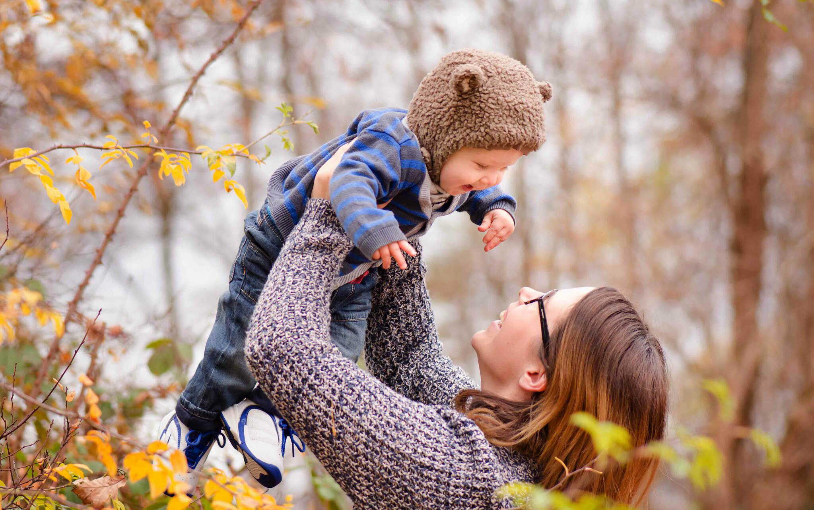

Chelston's Service
CHELSTON 的特色在於本身就是充滿美學的自行車，騎乘時輕鬆悠閒、簡單時尚，簡單的裝備也可以讓你很出眾，就像是你身上的配件單品一樣加分。結合設計美感＋顏色＋工藝技術，成為獨一無二的自行車。
Friendly
LOVE
Trust

About Chelston
來自一位擁有兩個寶貝的媽媽所創立，從想要參與兩個寶貝的每一個成長過程，陪伴著他們一起快樂的學習騎乘自行車的想法開始，獻給Chelsey 和 Aston。
Chelston Balance Bike
CHELSTON的Rookie平衡滑步車是經過精心設計和手工製作而成 - 主要目的是訓練和改善小朋友的平衡感。
Rookie幫助小朋友更快更輕易的學習如何騎自行車，首先需要先專注於掌握平衡和控制。
經典紅
嬰兒粉
糖果粉
柳橙橘
星空薄荷
土耳其綠
冰河藍
夜空藍
News
2020
04.29
CHELSTON
BIKES與大家共體時艱!防疫動起來，ROOKIE陪孩子們一起提升免疫力，雖然近日受疫情影響，但也要適時的帶孩子們到安全的地方放放電喔!
2020
03.25
兒童節連假四天即將來臨~CHELSTON團隊祝小朋友們兒童節快樂，趁著這四天好好的放鬆心情，帶著小孩到戶外踏踏青、呼吸新鮮空氣吧！
2019
12.09
一年一度的聖誕節又來臨了，今年聖誕老公公也提早進城與 CHELSTON BIKES 一起慶祝聖誕節，凡預購Rookie即贈送一組護具和一組號碼牌喔！
2019
01.23
CA TEAM 向大家拜個早年，祝大家新年快樂！諸事如意！年行大運好消息報報新春優惠活動馬上就要開跑囉，快來選購寶貝們的新年禮物吧！
2019
01.13
CHELSTON Footrest止滑貼紙黏貼於滑步車置腳處的止滑貼紙，由於每台滑步車使用的程度不同，如果發現止滑貼紙被磨平了，就需要更換新的止滑貼紙囉！